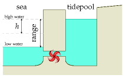
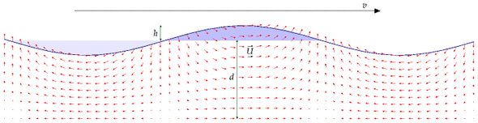
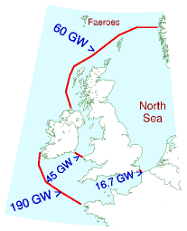
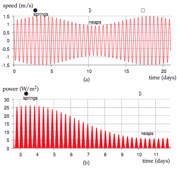
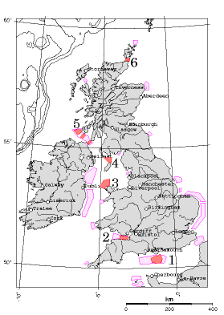
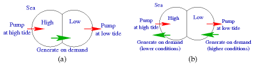

G Tide II

Figure G.1. A tide-pool in cross section. The pool was filled at high tide, and now it’s low tide. We let the water out through the electricity generator to turn the water’s potential energy into electricity.
Power density of tidal pools
To estimate the power of an artificial tide-pool, imagine that it’s filled rapidly at high tide, and emptied rapidly at low tide. Power is generated in both directions, on the ebb and on the flood. (This is called two-way generation or double-effect generation.) The change in potential energy of the water, each six hours, is mgh, where h is the change in height of the centre of mass of the water, which is half the range. (The range is the difference in height between low and high tide; figure G.1.) The mass per unit area covered by tide-pool is ρ × (2h), where ρ is the density of water (1000 kg/m3). So the power per unit area generated by a tide-pool is
\[ \frac{2\rho hgh}{\text{6\ hours}}\text{,} \]
assuming perfectly efficient generators. Plugging in h = 2 m (i.e., range 4 m), we find the power per unit area of tide-pool is 3.6 W/m2. Allowing for an efficiency of 90% for conversion of this power to electricity, 1 we get
power per unit area of tide-pool ≅ 3 W/m2.
So to generate 1 GW of power (on average), we need a tide-pool with an area of about 300 km2. A circular pool with diameter 20 km would do the trick. (For comparison, the area of the Severn estuary behind the proposed barrage is about 550 km2, and the area of the Wash is more than 400 km2.
If a tide-pool produces electricity in one direction only, the power per unit area is halved. The average power density of the tidal barrage at La Rance, where the mean tidal range is 10.9 m, has been 2.7 W/m2 for decades (chapter 14).
The raw tidal resource
The tides around Britain are genuine tidal waves. (Tsunamis, which are called “tidal waves,” have nothing to do with tides: they are caused by underwater landslides and earthquakes.) The location of the high tide (the crest of the tidal wave) moves much faster than the tidal flow – 100 miles per hour, say, while the water itself moves at just 1 mile per hour.

Figure G.2. A shallow-water wave. Just like a deep-water wave, the wave has energy in two forms: potential energy associated with raising water out of the light-shaded troughs into the heavy-shaded crests; and kinetic energy of all the water moving around as indicated by the small arrows. The speed of the wave, travelling from left to right, is indicated by the much bigger arrow at the top. For tidal waves, a typical depth might be 100 m, the crest velocity 30 m/s, the vertical amplitude at the surface 1 or 2 m, and the water velocity amplitude 0.3 or 0.6 m/s.
The energy we can extract from tides, using tidal pools or tide farms, can never be more than the energy of these tidal waves from the Atlantic. We can estimate the total power of these great Atlantic tidal waves in the same way that we estimate the power of ordinary wind-generated waves. The next section describes a standard model for the power arriving in travelling waves in water of depth d that is shallow compared to the wavelength of the waves (figure G.2). The power per unit length of wavecrest of shallow-water tidal waves is
\[ \begin{matrix} {\rho g^{3/2}\sqrt{d}h^{2}/2.} \\ \end{matrix} \]
Table G.3 shows the power per unit length of wave crest for some plausible figures. If d = 100 m, and h = 1 or 2 m, the power per unit length of wave crest is 150 kW/m or 600 kW/m respectively. These figures are impressive compared with the raw power per unit length of ordinary Atlantic deep water waves, 40 kW/m (Chapter F). Atlantic waves and the Atlantic tide have similar vertical amplitudes (about 1 m), but the raw power in tides is roughly 10 times bigger than that of ordinary wind-driven waves.
|
h (m) |
ρg3/2√h2/2 (kW/m) |
|---|---|
| 0.9 | 125 |
| 1.0 | 155 |
| 1.2 | 220 |
| 1.5 | 345 |
| 1.75 | 470 |
| 2.0 | 600 |
| 2.25 | 780 |
Table G.3. Power fluxes (power per unit length of wave crest) for depth d = 100 m.
Taylor (1920) worked out a more detailed model of tidal power that includes important details such as the Coriolis effect (the effect produced by the earth’s daily rotation), the existence of tidal waves travelling in the opposite direction, and the direct effect of the moon on the energy flow in the Irish Sea. Since then, experimental measurements and computer models have verified and extended Taylor’s analysis. Flather (1976) built a detailed numerical model of the lunar tide, chopping the continental shelf around the British Isles into roughly 1000 square cells. Flather estimated that the total average power entering this region is 215 GW. According to his model, 180 GW enters the gap between France and Ireland. From Northern Ireland round to Shetland, the incoming power is 49 GW. Between Shetland and Norway there is a net loss of 5 GW. As shown in figure G.4, Cartwright et al. (1980) found experimentally that the average power transmission was 60 GW between Malin Head (Ireland) and Florø (Norway) and 190 GW between Valentia (Ireland) and the Brittany coast near Ouessant. The power entering the Irish Sea was found to be 45 GW, and entering the North Sea via the Dover Straits, 16.7 GW.

Figure G.4. Average tidal powers measured by Cartwright et al. (1980).
The power of tidal waves
This section, which can safely be skipped, provides more details behind the formula for tidal power used in the previous section. I’m going to go into this model of tidal power in some detail because most of the official estimates of the UK tidal resource have been based on a model that I believe is incorrect.
Figure G.2 shows a model for a tidal wave travelling across relatively shallow water. This model is intended as a cartoon, for example, of tidal crests moving up the English channel or down the North Sea. It’s important to distinguish the speed U at which the water itself moves (which might be about 1 mile per hour) from the speed v at which the high tide moves, which is typically 100 or 200 miles per hour.
The water has depth d. Crests and troughs of water are injected from the left hand side by the 12-hourly ocean tides. The crests and troughs move with velocity
\[ \begin{matrix} \text{(G.2)\quad} & {v = \sqrt{gd}} \\ \end{matrix}\text{.} \]
We assume that the wavelength is much bigger than the depth, and we neglect details such as Coriolis forces and density variations in the water. Call the vertical amplitude of the tide h. For the standard assumption of nearly-vorticity-free flow, the horizontal velocity of the water is near-constant with depth. The horizontal velocity U is proportional to the surface displacement and can be found by conservation of mass:
\[ \begin{matrix} {U = {vh/d}} \\ \end{matrix}\text{.} \]
If the depth decreases, the wave velocity v reduces (equation (G.2)). For the present discussion we’ll assume the depth is constant. Energy flows from left to right at some rate. How should this total tidal power be estimated? And what’s the maximum power that could be extracted?
One suggestion is to choose a cross-section and estimate the average flux of kinetic energy across that plane, then assert that this quantity represents the power that could be extracted. This kinetic-energy-flux method was used by consultants Black and Veatch to estimate the UK resource. In our cartoon model, we can compute the total power by other means. We’ll see that the kinetic-energy-flux answer is too small by a significant factor.
The peak kinetic-energy flux at any section is
\[ \begin{matrix} {K_{\text{BV}} = \frac{1}{2}\rho AU^{3}} \\ \end{matrix}\text{,} \]
where A is the cross-sectional area. (This is the formula for kinetic energy flux, which we encountered in Chapter B.)
The true total incident power is not equal to this kinetic-energy flux. The true total incident power in a shallow-water wave is a standard textbook calculation; one way to get it is to find the total energy present in one wavelength and divide by the period. The total energy per wavelength is the sum of the potential energy and the kinetic energy. The kinetic energy happens to be identical to the potential energy. (This is a standard feature of almost all things that wobble, be they masses on springs or children on swings.) So to compute the total energy all we need to do is compute one of the two – the potential energy per wavelength, or the kinetic energy per wavelength – then double it. The potential energy of a wave (per wavelength and per unit width of wavefront) is found by integration to be
\[ \begin{matrix} {\frac{1}{\text{4}}\rho gh^{2}\lambda} \\ \end{matrix}\text{,} \]
So, doubling and dividing by the period, the true power of this model shallow-water tidal wave is
\[ \begin{matrix} {\text{power} = \frac{1}{2}\left( \rho gh^{2}\lambda \right) \times \omega/T = \frac{1}{2}\rho gh^{2}v \times \omega} \\ \end{matrix}\text{,} \]
where ω is the width of the wavefront. Substituting (v = )
\[ \begin{matrix} {\text{power} = \rho gh^{2}\sqrt{gd} \times \omega/2 = \rho g^{3/2}\sqrt{d}h^{2} \times \omega/2} \\ \end{matrix}\text{.} \]
Let’s compare this power with the kinetic-energy flux KBV. Strikingly, the two expressions scale differently with the amplitude h. Using the amplitude conversion relation (G.3), the crest velocity (G.2), and A = ωd, we can re-express the kinetic-energy flux as
\[ \begin{matrix} {= \frac{1}{2}\rho AU^{3} = \frac{1}{2}\rho\omega d\left( vh/d \right)^{3}} \\ {= \rho\left( {g^{32/}/\sqrt{d}} \right)h^{3} \times \omega/2.} \\ \end{matrix} \]
So the kinetic-energy-flux method suggests that the total power of a shallowwater wave scales as amplitude cubed (equation (G.8)); but the correct formula shows that the power scales as amplitude squared (equation (G.7)).
The ratio is
\[ \begin{matrix} {\frac{K_{\text{BV}}}{\text{power}} = \frac{\rho\omega\left( {g^{3/2}/\sqrt{d}} \right)h^{3}}{{\rho g^{3/2}}{h^{2}\sqrt{d}\omega}} =} \\ \end{matrix}\frac{h}{d}\text{.} \]
Because h is usually much smaller than d (h is about 1 m or 2 m, while d is 100 m or 10 m), estimates of tidal power resources that are based on the kinetic-energy-flux method may be much too small, at least in cases where this shallow-water cartoon of tidal waves is appropriate.
Moreover, estimates based on the kinetic-energy-flux method incorrectly assert that the total available power at springs (the biggest tides) is eight times greater than at neaps (the smallest tides), assuming an amplitude ratio, springs to neaps, of two to one; but the correct answer is that the total available power of a travelling wave scales as its amplitude squared, so the springs-to-neaps ratio of total-incoming-power is four to one.
Effect of shelving of sea bed, and Coriolis force
If the depth d decreases gradually and the width remains constant such that there is minimal reflection or absorption of the incoming power, then the power of the wave will remain constant. This means (h^{2}) is a constant, so we deduce that the height of the tide scales with depth as (h {1/d^{1/4}})

Figure G.5. (a) Tidal current over a 21-day period at a location where the maximum current at spring tide is 2.9 knots (1.5 m/s) and the maximum current at neap tide is 1.8 knots (0.9 m/s). (b) The power per unit sea-floor area over a nine-day period extending from spring tides to neap tides. The power peaks four times per day, and has a maximum of about 27 W/m2. The average power of the tide farm is 6.4 W/m2.
This is a crude model. One neglected detail is the Coriolis effect. The Coriolis force causes tidal crests and troughs to tend to drive on the right – for example, going up the English Channel, the high tides are higher and the low tides are lower on the French side of the channel. By neglecting this effect I may have introduced some error into the estimates.
Power density of tidal stream farms
Imagine sticking underwater windmills on the sea-bed. The flow of water will turn the windmills. Because the density of water is roughly 1000 times that of air, the power of water flow is 1000 times greater than the power of wind at the same speed.
What power could tidal stream farms extract? It depends crucially on whether or not we can add up the power contributions of tidefarms on adjacent pieces of sea-floor. For wind, this additivity assumption is believed to work fine: as long as the wind turbines are spaced a standard distance apart from each other, the total power delivered by 10 adjacent wind farms is the sum of the powers that each would deliver if it were alone.
Does the same go for tide farms? Or do underwater windmills interfere with each other’s power extraction in a different way? I don’t think the answer to this question is known in general. We can name two alternative assumptions, however, and identify cartoon situations in which each assumption seems valid. The “tide is like wind” assumption says that you can put tide-turbines all over the sea-bed, spaced about 5 diameters apart from each other, and they won’t interfere with each other, no matter how much of the sea-bed you cover with such tide farms.
The “you can have only one row” assumption, in contrast, asserts that the maximum power extractable in a region is the power that would be delivered by a single row of turbines facing the flow. A situation where this assumption is correct is the special case of a hydroelectric dam: if the water from the dam passes through a single well-designed turbine, there’s no point putting any more turbines behind that one. You can’t get 100 times more power by putting 99 more turbines downstream from the first. The oomph gets extracted by the first one, and there isn’t any more oomph left for the others. The “you can have only one row” assumption is the right assumption for estimating the extractable power in a place where water flows through a narrow channel from approximately stationary water at one height into another body of water at a lower height. (This case is analysed by Garrett and Cummins (2005, 2007).)
I’m now going to nail my colours to a mast. I think that in many places round the British Isles, the “tide is like wind” assumption is a good approximation. Perhaps some spots have some of the character of a narrow channel. In those spots, my estimates may be over-estimates.
Let’s assume that the rules for laying out a sensible tide farm will be similar to those for wind farms, and that the efficiency of the tidemills will be like that of the best windmills, about 1/2. We can then steal the formula for the power of a wind farm (per unit land area) from chapter B. The power per unit sea-floor area is
\[ \begin{matrix} {\frac{\text{power\ per\ tidemill}}{\text{area\ per\ tidemill}} = \frac{\pi}{200} \times \frac{1}{2}\rho U^{3}} \\ \end{matrix} \]
Using this formula, table G.6 shows this tide farm power for a few tidal currents.
U
| speed (m/s) | speed (knots) | power density (W/m2) |
|---|---|---|
| 0.5 | 1 | 1 |
| 1 | 2 | 8 |
| 2 | 4 | 60 |
| 3 | 6 | 200 |
| 4 | 8 | 500 |
| 5 | 10 | 1000 |
Table G.6. Tide farm power density (in watts per square metre of sea-floor) as a function of flow speed U. (1 knot = 1 nautical mile per hour = 0.514 m/s.) The power density is computed using (π/200)1⁄2ρU3 (equation (G.10)).
Now, what are typical tidal currents? Tidal charts usually give the currents associated with the tides with the largest range (called spring tides) and the tides with the smallest range (called neap tides). Spring tides occur shortly after each full moon and each new moon. Neap tides occur shortly after the first and third quarters of the moon. The power of a tide farm would vary throughout the day in a completely predictable manner. Figure G.5 illustrates the variation of power density of a tide farm with a maximum current of 1.5 m/s. The average power density of this tide farm would be 6.4 W/m2. There are many places around the British Isles where the power per unit area of tide farm would be 6 W/m2 or more. This power density is similar to our estimates of the power densities of wind farms (2–3 W/m2) and of photovoltaic solar farms (5–10 W/m2).
We’ll now use this “tide farms are like wind farms” theory to estimate the extractable power from tidal streams in promising regions around the British Isles. As a sanity check, we’ll also work out the total tidal power crossing each of these regions, using the “power of tidal waves” theory, to check our tide farm’s estimated power isn’t bigger than the total power available. The main locations around the British Isles where tidal currents are large are shown in figure G.7.

Figure G.7. Regions around the British Isles where peak tidal flows exceed 1 m/s. The six darkly-coloured regions are included in table G.8:
- the English channel (south of the Isle of Wight);
- the Bristol channel;
- to the north of Anglesey;
- to the north of the Isle of Man;
- between Northern Ireland, the Mull of Kintyre, and Islay; and
- the Pentland Firth (between Orkney and mainland Scotland), and within the Orkneys.
There are also enormous currents around the Channel Islands, but they are not governed by the UK. Runner-up regions include the North Sea, from the Thames (London) to the Wash (Kings Lynn). The contours show water depths greater than 100 m. Tidal data are from Reed’s Nautical Almanac and DTI Atlas of UK Marine Renewable Energy Resources (2004).
I estimated the typical peak currents at six locations with large currents by looking at tidal charts in Reed’s Nautical Almanac. (These estimates could easily be off by 30%.) Have I over-estimated or under-estimated the area of each region? I haven’t surveyed the sea floor so I don’t know if some regions might be unsuitable in some way – too deep, or too shallow, or too tricky to build on.
Admitting all these uncertainties, I arrive at an estimated total power of 9 kWh/d per person from tidal stream-farms. This corresponds to 9% of the raw incoming power mentioned in chapter 14, 100 kWh per day per person. (The extraction of 1.1 kWh/d/p in the Bristol channel, region 2, might conflict with power generation by the Severn barrage; it would depend on whether the tide farm significantly adds to the existing natural friction created by the channel, or replaces it.)
Region
U
power density
area
average power
raw power
(knots)
d
ω
| Region | U N (knots) | U S (knots) | power density (W/m2) | area (km2) | average power (kWh/d/p) | d (m) | ω (km) | raw power N (kWh/d/p) | raw power S (kWh/d/p) |
|---|---|---|---|---|---|---|---|---|---|
| 1 | 1.7 | 3.1 | 7 | 400 | 1.1 | 30 | 30 | 2.3 | 7.8 |
| 2 | 1.8 | 3.2 | 8 | 350 | 1.1 | 30 | 17 | 1.5 | 4.7 |
| 3 | 1.3 | 2.3 | 2.9 | 1000 | 1.2 | 50 | 30 | 3.0 | 9.3 |
| 4 | 1.7 | 3.4 | 9 | 400 | 1.4 | 30 | 20 | 1.5 | 6.3 |
| 5 | 1.7 | 3.1 | 7 | 300 | 0.8 | 40 | 10 | 1.2 | 4.0 |
| 6 | 5.0 | 9.0 | 170 | 50 | 3.5 | 70 | 10 | 24 | 78 |
| Total | 9 |
Table G.8. (a) Tidal power estimates assuming that stream farms are like wind farms. The power density is the average power per unit area of sea floor. The six regions are indicated in figure G.7. N = Neaps. S = Springs. (b) For comparison, this table shows the raw incoming power estimated using equation (G.1).
v (m/s)
v (knots)
Friction power density (W/m2)
tide farm power density
R1 = 0.01
R1 = 0.003
| speed (m/s) | speed (knots) | R1 = 0.01 | R1 = 0.003 | tide farm (table G.6) |
|---|---|---|---|---|
| 0.5 | 1 | 1.25 | 0.4 | 1 |
| 1 | 2 | 10 | 3 | 8 |
| 2 | 4 | 80 | 24 | 60 |
| 3 | 6 | 270 | 80 | 200 |
| 4 | 8 | 640 | 190 | 500 |
| 5 | 10 | 1250 | 375 | 1000 |
Table G.9. Friction power density R1ρU3 (in watts per square metre of sea-floor) as a function of flow speed, assuming R1 = 0.01 or 0.003. Flather (1976) uses R1 = 0.0025–0.003; Taylor (1920) uses 0.002. (1 knot = 1 nautical mile per hour = 0.514 m/s.) The final column shows the tide farm power estimated in table G.6. For further reading see Kowalik (2004), Sleath (1984).
Estimating the tidal resource via bottom friction
Another way to estimate the power available from tide is to compute how much power is already dissipated by friction on the sea floor. A coating of turbines placed just above the sea floor could act as a substitute bottom, exerting roughly the same drag on the passing water as the sea floor used to exert, and extracting roughly the same amount of power as friction used to dissipate, without significantly altering the tidal flows.
So, what’s the power dissipated by “bottom friction”? Unfortunately, there isn’t a straightforward model of bottom friction. It depends on the roughness of the sea bed and the material that the bed is made from – and even given this information, the correct formula to use is not settled. One widely used model says that the magnitude of the stress (force per unit area) is (R_{1}U^{2}) where U is the average flow velocity and (R_{1}) is a dimensionless quantity called the shear friction coefficient. We can estimate the power dissipated per unit area by multiplying the stress by the velocity. Table G.9 shows the power dissipated in friction, (R_{1}U^{3}) assuming (R_{1} = 0.01) or (R_{1} = 0.003) For values of the shear friction coefficient in this range, the friction power is very similar to the estimated power that a tide farm would deliver. This is good news, because it suggests that planting a forest of underwater windmills on the sea-bottom, spaced five diameters apart, won’t radically alter the flow. The natural friction already has an effect that is in the same ballpark.
Tidal pools with pumping
“The pumping trick” artificially increases the amplitude of the tides in a tidal pool so as to amplify the power obtained. The energy cost of pumping in extra water at high tide is repaid with interest when the same water is let out at low tide; similarly, extra water can be pumped out at low tide, then let back in at high tide. The pumping trick is sometimes used at La Rance, boosting its net power generation by about 10% (Wilson and Balls, 1990). Let’s work out the theoretical limit for this technology. I’ll assume that generation has an efficiency of ({} = 0.9) and that pumping has an efficiency of ({} = 0.85) Let the tidal range be 2h. I’ll assume for simplicity that the prices of buying and selling electricity are the same at all times, so that the optimal height boost b to which the pool is pumped above high water is given by (marginal cost of extra pumping = marginal return of extra water):
[b/{} = {}( {b + 2h} )]
Defining the round-trip efficiency (= {}{}) we have
[b = 2h]
For example, with a tidal range of 2h = 4 m, and a round-trip efficiency of ε = 76%, the optimal boost is b = 13 m. This is the maximum height to which pumping can be justified if the price of electricity is constant.
Let’s assume the complementary trick is used at low tide. (This requires the basin to have a vertical range of 30 m!) The delivered power per unit area is then
\[ \left. \left( {\frac{1}{2}\rho g\varepsilon_{\text{g}}\left( b + 2h \right)^{2} - \frac{1}{2}\rho g\frac{1}{\varepsilon_{\text{p}}}b^{2}} \right)/T \right.\text{,} \]
where T is the time from high tide to low tide. We can express this as the maximum possible power density without pumping, ({_{}2gh^{2}}/T) scaled up by a boost factor
\[ \left( \frac{1}{1 - \varepsilon} \right)\text{,} \]
which is roughly a factor of 4. Table G.10 shows the theoretical power density that pumping could deliver. Unfortunately, this pumping trick will rarely be exploited to the full because of the economics of basin construction: full exploitation of pumping requires the total height of the pool to be roughly 4 times the tidal range, and increases the delivered power four-fold. But the amount of material in a sea-wall of height H scales as H2, so the cost of constructing a wall four times as high will be more than four times as big. Extra cash would probably be better spent on enlarging a tidal pool horizontally rather than vertically.
|
tidal amplitude (half-range) h (m) |
optimal boost height b (m) |
power with pumping (W/m2) |
power without pumping (W/m2) |
|---|---|---|---|
| 1.0 | 6.5 | 3.5 | 0.8 |
| 2.0 | 13 | 14 | 3.3 |
| 3.0 | 20 | 31 | 7.4 |
| 4.0 | 26 | 56 | 13 |
Table G.10. Theoretical power density from tidal power using the pumping trick, assuming no constraint on the height of the basin’s walls.
|
tidal amplitude (half-range) h (m) |
boost height b (m) |
power with pumping (W/m2) |
power without pumping (W/m2) |
|---|---|---|---|
| 1.0 | 1.0 | 1.6 | 0.8 |
| 2.0 | 2.0 | 6.3 | 3.3 |
| 3.0 | 3.0 | 14 | 7.4 |
| 4.0 | 4.0 | 25 | 13 |
Table G.11. Power density offered by the pumping trick, assuming the boost height is constrained to be the same as the tidal amplitude. This assumption applies, for example, at neap tides, if the pumping pushes the tidal range up to the springs range.
The pumping trick can nevertheless be used for free on any day when the range of natural tides is smaller than the maximum range: the water level at high tide can be pumped up to the maximum. Table G.11 gives the power delivered if the boost height is set to h, that is, the range in the pool is just double the external range. A doubling of vertical range is easy at neap tides, since neap tides are typically about half as high as spring tides. Pumping the pool at neaps so that the full springs range is used thus allows neap tides to deliver roughly twice as much power as they would offer without pumping. So a system with pumping would show two-weekly variations in power of just a factor of 2 instead of 4.
Getting “always-on” tidal power by using two basins
Here’s a neat idea: have two basins, one of which is the “full” basin and one the “empty” basin; every high tide, the full basin is topped up; every low tide, the empty basin is emptied. 2 These toppings-up and emptyings could be done either passively through sluices, or actively by pumps (using the trick mentioned above). Whenever power is required, water is allowed to flow from the full basin to the empty basin, or (better in power terms) between one of the basins and the sea. The capital cost of a two-basin scheme may be bigger because of the need for extra walls; the big win is that power is available all the time, so the facility can follow demand.

Figure G.12. Different ways to use the tidal pumping trick. Two lagoons are located at sea-level. (a) One simple way of using two lagoons is to label one the high pool and the other the low pool; when the surrounding sea level is near to high tide, let water into the high pool, or actively pump it in (using electricity from other sources); and similarly, when the sea level is near to low tide, empty the low pool, either passively or by active pumping; then whenever power is sufficiently valuable, generate power on demand by letting water from the high pool to the low pool. (b) Another arrangement that might deliver more power per unit area has no flow of water between the two lagoons. While one lagoon is being pumped full or pumped empty, the other lagoon can deliver steady, demand-following power to the grid. Pumping may be powered by bursty sources such as wind, by spare power from the grid (say, nuclear power stations), or by the other half of the facility, using one lagoon’s power to pump the other lagoon up or down.
We can use power generated from the empty basin to pump extra water into the full basin at high tide, and similarly use power from the full basin to pump down the empty basin at low tide. This self-pumping would boost the total power delivered by the facility without ever needing to buy energy from the grid. It’s a delightful feature of a two-pool solution that the optimal time to pump water into the high pool is high tide, which is also the optimal time to generate power from the low pool. Similarly, low tide is the perfect time to pump down the low pool, and it’s the perfect time to generate power from the high pool. In a simple simulation, I’ve found that a two-lagoon system in a location with a natural tidal range of 4 m can, with an appropriate pumping schedule, deliver a steady power of 4.5 W/m2 (MacKay, 2007a). One lagoon’s water level is always kept above mean sea-level; the other lagoon’s level is always kept below mean sea-level. This power density of 4.5 W/m2 is 50% bigger than the maximum possible average power density of an ordinary tide-pool in the same location (3 W/m2). The steady power of the lagoon system would be more valuable than the intermittent and less-flexible power from the ordinary tide-pool.
A two-basin system could also function as a pumped-storage facility.
Notes
Further reading: Shaw and Watson (2003b); Blunden and Bahaj (2007); Charlier (2003a,b). For further reading on bottom friction and variation of flow with depth, see Sleath (1984). For more on the estimation of the UK tidal resource, see MacKay (2007b). For more on tidal lagoons, see MacKay (2007a).
Efficiency of 90%… Turbines are about 90% efficient for heads of 3.7 m or more. Baker et al. (2006).↩︎
Getting “always-on” tidal power by using two basins. There is a two-basin tidal power plant at Haishan, Maoyan Island, China. A single generator located between the two basins, as shown in figure G.12(a), delivers power continuously, and generates 39 kW on average. [2bqapk].↩︎